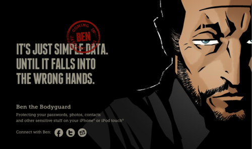

Fri, 03 Dec 2010 09:46:00 · UI · Design · Games · NerdCommunications · iPhone
Most Fantastic Landing Page Design!

Kudos to the NerdCommunications team for designing one of the most wickedly awesome landing page design for their upcoming game Ben the Bodyguard - Scroll down to explore more.
I love it already! Let’s hope the game will be equally cool?